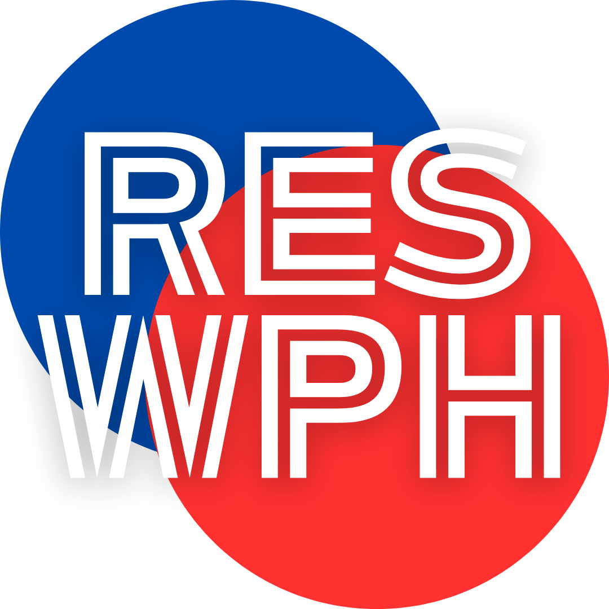

I’ve given this a lot of through and I think this app might be hard to develop, but is very necessary. My idea for my app project is an application that could assist in medical emergency situations. Some years ago, I found myself in a medical situation with no idea what to do. I was alone and afraid, and I could barely breath. Thank goodness, I was able to speak enough to call 411 for an ambulance, but my mind always thinks: what if I wasn’t able to speak. Or, what if I would’ve passed out in my apartment. I was lucky because I had prior knowledge of what to do in those types of situation (call 411, and get to a place where people can easily access you).
The purpose of the application is to provide people with an ambulance, and while waiting; provided them with instructions or tips that might be able to better their chances of survive or make them easily accessible once the ambulance gets there. I would also like the app to provide a liberty. The liberty would provide info like: how to recognize a stroke, how to preform chest compression, how to check for a pulse, and ETC. Adding to the purpose of providing education in medical emergencies situations. My goal for this app is to help people in what could be life threatening situation. So, I guess if it’s not too bold of me to say… I’d like the app to save lives. Stroke, concussion, heart attack, allergic reactions, etc. If not handled properly it can cause more damage. And people need to give their love one and there love ones a fight chance once there able to get then the help they need.
I have a lot of things motivating me to work on this app, and it’s not just me trying to get a passing grade to graduate. Not only did I have my own emergency situation that could’ve went left, but it’s a real need for this kind of service and information. I found an article from Harvard Health Publishing about a recent study that American Heart Association (AHA) did. It talks about how only 65% of Americans received CPR training, but only 18% of people are up to date on their training. Those number are shocking to say the less, but this is even more shocking. According to my CPR Certification Online; approximately 90 percent of out-of-hospital cardiac arrest victims die. Studies have shown that bystander CPR can double or triple the chances of survival for someone experiencing cardiac arrest. In fact, the AHA reports that survival rates can increase to 40% or higher when bystander CPR is performed promptly. There are so many thing we can do to be prepared for the worst, and having an app be able to walk you through the CPR process could give you or a love one the opportunity to continue to live.
